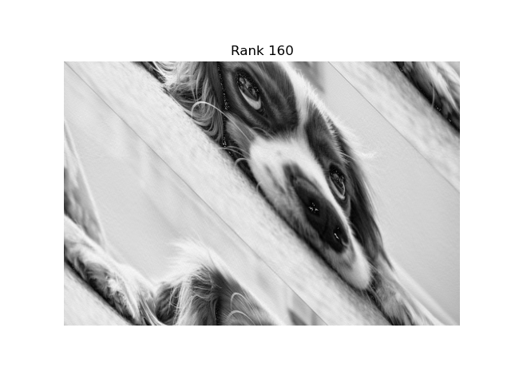

Image Compression with the SVD in C++
· 662 words · 4 minutes reading time math Statistics
Motivation
The singular value decomposition is one of the most useful factorizations in numerical linear algebra, and image compression is its most visual demo. A grayscale image is just a matrix of pixel intensities; the SVD lets you keep only the handful of directions that carry the most information and throw the rest away. This was the SVD half of my AM213A final project: load a high-resolution image as a matrix in C++, compute its SVD with LAPACK, and reconstruct it at a sequence of ranks to watch quality trade against compression.
The test image is a $1279 \times 1920$ grayscale photo of a dog, read in as a matrix of doubles.
The Math
Any real $m \times n$ matrix $A$ factors as
$$ A = U \Sigma V^{T}, $$
where $U \in \mathbb{R}^{m\times m}$ and $V \in \mathbb{R}^{n\times n}$ are orthogonal and $\Sigma$ is diagonal with the singular values $\sigma_1 \ge \sigma_2 \ge \dots \ge 0$ on its diagonal. Because the singular values are sorted, the sum
$$ A = \sum_{i=1}^{r} \sigma_i, u_i v_i^{T} $$
is dominated by its first few terms. The rank-$K$ truncation keeps only the $K$ largest singular values,
$$ A_K = \sum_{i=1}^{K} \sigma_i, u_i v_i^{T}, $$
which the Eckart–Young theorem guarantees is the best rank-$K$ approximation of $A$ in both the spectral and Frobenius norms. In practice I built $A_K$ by zeroing out every diagonal entry of $\Sigma$ past index $K$ and re-multiplying $U \Sigma_K V^{T}$.
The savings: instead of storing $m \times n$ numbers, a rank-$K$ image needs only $K(m + n + 1)$ — the kept columns of $U$, rows of $V^{T}$, and singular values. For this image, $K = 160$ stores roughly 12% of the original data.
The C++ Implementation
The heavy lifting is done by dgesvd, the LAPACK double-precision SVD routine,
called here through Apple's Accelerate framework. (LAPACK is the modern successor
to the original LINPACK library.) The workflow in driver.cpp:
- Read the
.datpixel file into avector<vector<double>>, then flatten it into a column-majordouble*array — the layout LAPACK expects. - Call
dgesvd_withJOBU = JOBVT = 'A'to get the full $U$, $\Sigma$, and $V^{T}$. - Rebuild $\Sigma$ as a diagonal matrix, then loop over a list of target ranks, zeroing the tail of $\Sigma$ and reconstructing.
char JOBU = 'A', JOBVT = 'A';
int M = 1279, N = 1920, LDA = M, LDU = M, LDVT = N;
int mn = min(M, N), MN = max(M, N);
int LWORK = 2 * max(3*mn + MN, 5*mn);
int INFO;
double* S = new double[mn];
double* U = new double[LDU*M];
double* VT = new double[LDVT*N];
double* WORK = new double[LWORK];
dgesvd_(&JOBU, &JOBVT, &M, &N,
doggy_arr, &LDA,
S, U, &LDU, VT, &LDVT,
WORK, &LWORK, &INFO);
The compression loop sweeps $K \in {1279, 640, 320, 160, 80, 40, 20, 10}$:
int k[8] = {1279, 640, 320, 160, 80, 40, 20, 10};
for (int i = 0; i < 8; i++) {
for (int j = 0; j < M; j++)
if (j > k[i]) Sdag[j][j] = 0; // truncate Sigma
US = matrixmult(Uvec, Sdag);
auto USVT2 = matrixmult(US, VTvec); // reconstruct A_K
auto diff = difference(USVT, USVT2); // error vs full-rank
double err = frobnorm(diff) / (M*N);
}
Reconstruction error is measured with the Frobenius norm, computed via $\lVert A \rVert_F = \sqrt{\operatorname{tr}(A^{T} A)}$, then normalized by the pixel count:
double frobnorm(vector<vector<double>> A) {
auto AT = transpose(A);
auto ATA = matrixmult(AT, A);
return sqrt(trace(ATA, A.size()));
}
Results
The reconstructions show how quickly the image becomes recognizable. At rank 10 only the broadest light/dark structure survives; by rank 40 the subject is clearly emerging; rank 160 is visually close to the original; and rank 1279 (full) is the exact image.


Key Takeaways
The project distilled down to a few lessons:
- A few singular values carry most of the picture. Because $\sigma_i$ decays fast, low ranks reconstruct a faithful image — the SVD concentrates information into its leading modes, which is exactly why it compresses.
- Eckart–Young makes truncation optimal. Zeroing the smallest singular values isn't a heuristic; it provably gives the best possible rank-$K$ approximation, so there's no better way to spend a fixed storage budget.
- Memory layout is the real work of calling LAPACK.
dgesvdis one function call; getting the image into the column-majordouble*it expects, sizing theLWORKworkspace, and shuttling $U$, $\Sigma$, $V^{T}$ back into matrices was the bulk of the C++. - Compression vs. fidelity is a tunable knob. Sweeping $K$ and tracking the normalized Frobenius error turns "how compressed?" into a quantitative curve rather than a guess — error falls monotonically as $K$ grows, with diminishing returns past the point where the image already looks right.